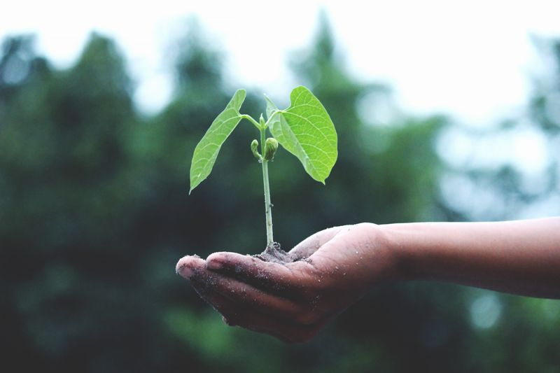
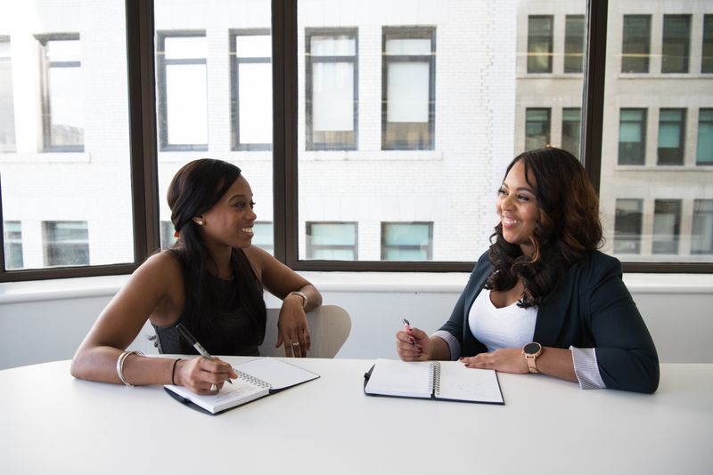

Melatih Cara Berpikir Anak Lewat Mencoba Langsung.
Anak belajar sains, teknologi, rekayasa, seni, dan matematika lewat satu proyek yang sama — bukan lima pelajaran yang berdiri sendiri.

Lima Bidang, Satu Proyek
Setiap bidang dikerjakan dalam proyek yang sama, supaya anak terbiasa melihat hubungan antar pelajaran.
Science
Mengamati dan mencoba langsung — dari tanaman di Roof Garden sampai percobaan sederhana di dalam kelas.
Technology
Mengenalkan perangkat digital sebagai alat bantu belajar dan berkarya, bukan sekadar hiburan.
Engineering
Merancang lalu membuat sesuatu untuk menyelesaikan masalah nyata di sekitar anak.
Arts
Menuangkan ide menjadi bentuk yang bisa dilihat, sekaligus melatih motorik halus.
Mathematics
Memakai Framework Singapura dari Dr. Yeap Ban Har: anak paham konsepnya dulu, baru masuk ke angka dan rumus.
Tempat Anak Mencoba
Ruang yang dipakai dalam kegiatan harian, bukan hanya saat acara tertentu.
SPACELAB
Ruang eksplorasi sains dan luar angkasa. Anak mengamati, bertanya, lalu mencoba sendiri.

Learning Corners
Sudut kegiatan di dalam kelas mengikuti Six Elements of Teaching dari Prof. Lin Pei Rong.

Roof Garden
Kebun di atap sekolah untuk mengamati pertumbuhan tanaman dari minggu ke minggu.

Laboratorium Komputer
Dipakai murid SD untuk mata pelajaran Computing dari Pearson Edexcel.
Yang Dilatih: 4C
Empat kemampuan yang terbentuk dari cara belajar ini, meski tidak muncul di nilai rapor.
Critical Thinking
Menimbang informasi dulu sebelum mengambil kesimpulan.
Creativity
Mencari cara lain saat cara pertama belum berhasil.
Collaboration
Membagi peran dan menyelesaikan tugas bersama kelompok.
Communication
Menjelaskan hasil kerjanya supaya dipahami orang lain.
Latih Logikanya Sambil Main.
Kumpulan mini game logika dan sains yang bisa langsung dimainkan dari browser.
Buka Portal Game
3D WebGL
STEAM Explorer
Sinergi Pembelajaran ACT
Cara berpikir kritis, kemampuan berbahasa, dan sikap yang baik kami kembangkan bersama lewat ACT: Attitude, Communication, Thinking.